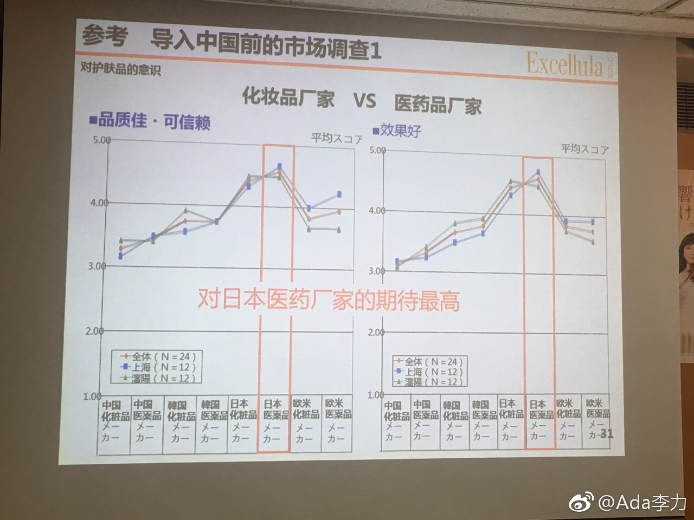

今天听到的调查数据有意思。根据对上海和沈阳用户的调查，对日本医药厂家的评价最高。欧美药厂产品的效果只相当于韩国药厂？这跟我的认知差异有些大。感觉是取样地区有偏颇，上海和沈阳都深受日本影响，如果在北京，深圳调查，数据可能是另外一个样子。 
#创业#十几年前还在上研究生时，参加过一个日本软件开发项目，需求分析是日本同行做的，拿到需求文档的时候，很震惊，非常非常详细，每个页面上的每个元素，都详细标明参数，细化到需要多少测试类型数据，测试多少次。我曾对同样数据重复输入30次表示质疑，对方说之前有过经验，同样数据重复输入几十次以后，就是会出问题。后来一直在美国IT公司工作，再也没有见过那么细致的需求文档。因为美国是IT领头羊，我一度觉得日本的那种抠细节做事方式，可能是其IT行业不发达的原因之一，缺乏创造力嘛。这次到日本开会，会议的组织，接待，讲解等等，忽然让我想到了很多年前的那份软件需求文档，就是那种感觉：很用心，很细致，你没想到的，他们都想到做到了。这两天只要有机会进商店，就是买买买，我喜欢逛杂物区，厨具区。只是雨伞，就有五六排货架，几十种可以挑；便当盒也让人挑花眼，每个都可以当艺术品。然后我就在想，这么丰富的商品，怎么可以说日本人是缺乏创造力呢。又细致又有创造力，也是很难达到的境界。
家里的仓鼠曾经有一段时间总喂花生，很短时间就养得很肥。棒起来不小心掉地上时，感觉就是掉了一坨泥。这个仓鼠有个悲伤的结尾，有一周家里没人，饿死了。之后再没养过仓鼠。---:该账号因被投诉违反法律法规和《微博社区公约》的相关规定，现已无法查看。查看帮助 网页链接